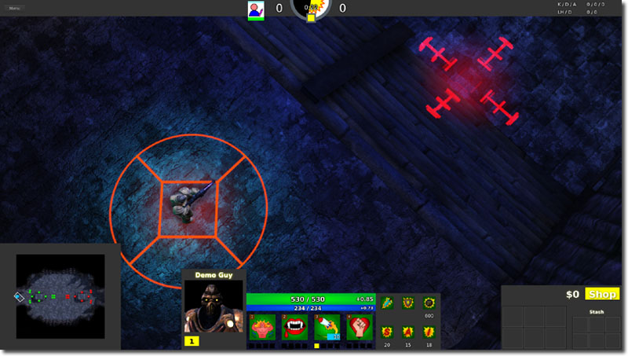
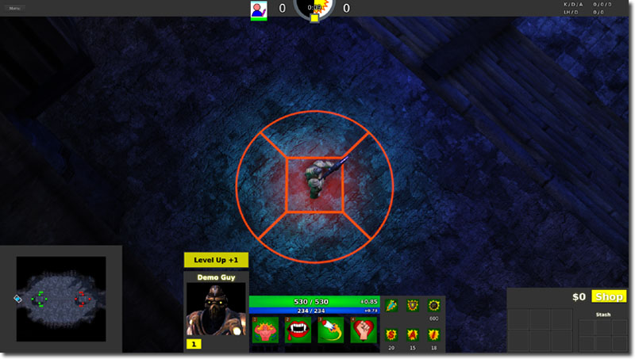
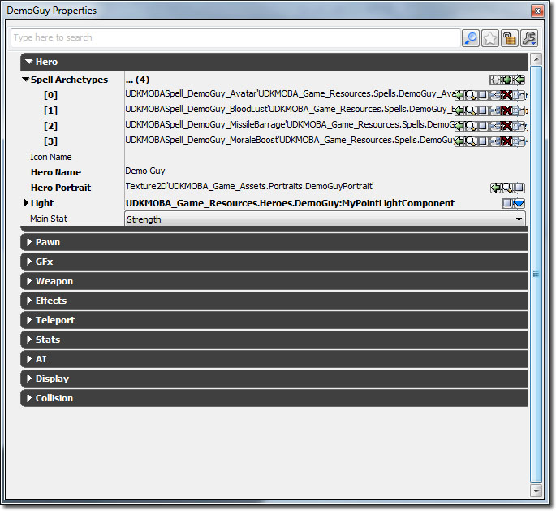

UDN
Search public documentation:
MOBAKitSpellsCH
English Translation
日本語訳
한국어
Interested in the Unreal Engine?
Visit the Unreal Technology site.
Looking for jobs and company info?
Check out the Epic games site.
Questions about support via UDN?
Contact the UDN Staff
日本語訳
한국어
Interested in the Unreal Engine?
Visit the Unreal Technology site.
Looking for jobs and company info?
Check out the Epic games site.
Questions about support via UDN?
Contact the UDN Staff
MOBA 初学者工具包 - 法术
于2012 年 5 月针对 UDK 进行最后测试
概述
法术是玩家和怪物、英雄、城堡及世界进行交互的方式。法术通常可以执行很多事情，并且可以通过不同方式进行设置。法术可以是目标法术、被动法术、简单法术及可切换法术。这四种法术代表了大多数游戏中的主要法术类型。法术和能力及技能是一样的意思。
什么是目标法术？

目标法术是一种需要玩家进一步输入的法术。它通常用于当法术要求有一个目标或一个已定义区域的情形。这使得游戏策划可以设置法术仅影响怪物、英雄、城堡或世界中的某个区域。什么是被动法术？

被动法术，当条件满足时总是处于激活状态。这通常用于创建一个径向buff (增强能力魔法)或debuff（减弱能力魔法）什么是简单法术?
简单法术，由玩家激活并执行一些动作。比如，它可以作为一个单独的射击武器。
什么是可切换法术？
可切换法术，可以由玩家激活或禁用。当法术被激活、禁用或当前正在激活状态时将可以触发一些动作。这可以为其他玩家创建临时的buff（能力增强魔法），而为具有该法术的英雄主角创建debuff（能力减弱魔法）。
UDKMOBASpell
UDKMOBASpell基本上是个具有多种功能的类，可以处理各个方面，比如使法术平静下来，它是个通用接口，以便来使用法术及存储关于法术的数据。注意，当我们‘激活’一个法术时，将会导致开始进行动画。‘激活时间’过后，我们将‘投射’该法术，此时将真正地 伤害/产生 一个 射弹/任何其他东西。然后可以有返回动画，尽管进行‘法术施加’，但是其他命令可以排队。
- 玩家决定使用一种法术。
- 玩家可以选择设置法术目标。
- 法术激活、生成特效、启动动画。
- 激活时间过去。如果法术正在形成，那么这个时间为0.
- 投射法术，产生伤害、生成特效、反转动画。
- 激活时间过去。如果法术正在形成，这可能会被中断。
函数
- ReplicatedEvent() - 当某个标记为RepNotify的变量已经被复制到客户端时调用该函数。这用于捕获客户端应该何时初始化法术、当法术激活或投射完成后何时播放特效的时间。
- ClientSetOwner() - 这是个从服务器到传递了Owner的客户端的一个远程过程调用。
- Initialize() - 当要初始化法术时调用该函数。该函数存储了具有这个法术的pawn,并允许子类存储其他东西。
- SendPlayerMessage() - 当该法术应该给本地玩家发送某种消息时调用该函数。该信息可以是告诉玩家没有足够力量施加法术或者法术还没准备好。
- CanCast() - 该函数返回是否可以施加法术。
- GetManaCost() - 该函数返回该法术当前的法力消耗。
- GetActivationTime() - 该函数返回该法术当前的激活时间长度。
- GetCooldownTime() - 该函数返回该法术当前的平静时间。
- Activate() - 该函数激活法术。
- SetTargetsFromAim() - 该函数根据输入目标位置、方向及给目标施加法术的方式来设置目标。
- ActivateEffects() - 当法术已经被激活时调用该函数。
- Cast() - 该函数将投射法术。
- PerformCast() - 该函数处理法术的交互逻辑。所有法术应该继承该类来设置其自己的东西。
- CastEffects() - 当已经投射法术时调用该函数。
- CooldownTimer() - 当已经触发是法术恢复平静计时器时调用该函数。
- AdjustDamage() - 该函数用于在将法术应用到pawn拥有者之前调整伤害量。该函数迭代所有法术及其道具，允许它们调整伤害量。
变量
- Spell(法术)
- IconName - UI中法术图标所使用的贴图的名称。这应该和图标GFx视频剪辑中的帧名称相匹配。
- MaxLevel - 法术可以升级到的最高级别。
- ManaCost - 应用激活法术时所用的法力。法术的级别用于作为该数组的索引。
- HasActive - 该法术是否具有激活的能力。被动法术的该项设置为false。
- AimingType - 该法术是否需要用户选择将法术发射到的位置。
- Aim
- DecalMaterial - 要使用的Decal材质，仅限于PC上。该项用于标识玩家当前正在朝向何处瞄准来发射法术。
- DecalSize - 该项标识当使用decal作为可视化瞄准标记时该decal的大小。
- Active
- ActivatingSoundCue - 当激活法术时要播放的声音。
- ActivatingParticleTemplate - 当激活法术时要实例化的粒子特效。
- CastingSoundCue - 当投射法术时要播放的声音。
- CastingParticleTemplate - 当投射法术时要实例化的粒子特效。
- CooldownTime - 恢复平静的时间。该投射该法术后法术重新恢复所需的时间。法术的级别用于作为该数组的索引。
- ActivationTime - 从触发法术功能到在真正施加 伤害/等 之前所需的时间。法术的级别用于作为该数组的索引。
- AttackType - 给定射弹或伤害的攻击类型。
怎么制作一个新的法术?
新的法术首先可以通过创建一个继承于UDKMOBASpell的新类来创建。从这里开始，您要经常使用的入手点是 PerformCast() 。如果您的法术差异很大，那么最好查看 Cathode 和DemoGuy示例来进行进一步的修改。
 当您创建完新的法术类后，您可以使用虚幻编辑器为其创建一个原型。
当您创建完新的法术类后，您可以使用虚幻编辑器为其创建一个原型。
 一但原型创建后，您可以调整暴露在编辑器中的变量。
一但原型创建后，您可以调整暴露在编辑器中的变量。

最后，将该法术原型分配给UDKMOBAHero原型，以便英雄初始时可以使用那个法术。